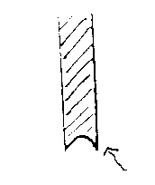
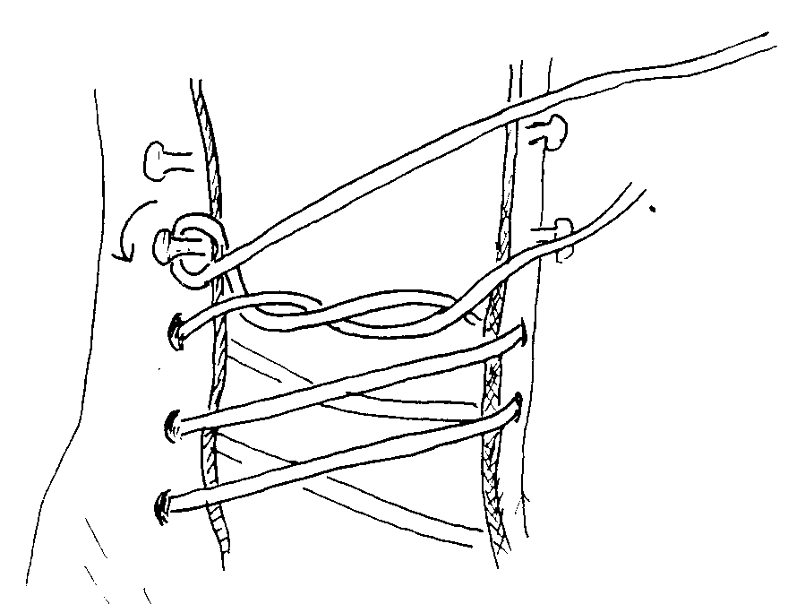

There are two prominent myths that stand between prospective skaters and the enjoyment of skating. First is the myth that certain people will never be able to skate because of some inherent weakness of their ankles. Their feet flop from side to side, and at worst they find themselves skating around on their insteps. This dreadful situation is enough to dampen all but the most fiery enthusiasm. The reality is that with properly fitted skates that give good support, this apparent physical disability disappears. Second is the belief that sharp blades are for hot shots and that dull blades are safer for the novice. This rumor may have been started by the inventor of the scissors you may remember from kindergarten, the ones that bend, but don't cut, paper. The resulting frustration level is the same, for the reality is that unless blades are reasonably sharp, you can't skate on them at all.
So how do we attain a "good" fit, with "proper" support and blade sharpness? First, stay away from department store skates - you'd just be buying yourself another set of weak ankles. Even the better skates available at a general sporting goods store will probably not be of the quality you need, and the salespeople there will not usually be knowledgeable enough to help you choose your skates. Visit a store that specializes in figure skates, and be ready to bite the bullet when it comes to cost. Consider that good skates help protect you from injury, and bad skates impede your progress.
The first thing you'll notice at the skate shop is that boots and blades are sold separately. The boots you need must be stiff enough to prevent most lateral motion (ankle flopping!) but must still allow flexing of your ankle, enough to let you bend your knees deeply while skating. For comfort, the boots should also conform somewhat to your feet. The only material that really fills the bill is thick leather; the plastic of department store skates doesn't even come close. With new boots the flexibility at the ankle will develop as you begin to wear them (an important part of "breaking in" your skates - more about that later.) Old boots can become so heavily creased at the ankle that they no longer provide support (they've "broken down"). The better the boots you buy, the longer they'll last without breaking down, so look at good boots as an investment. In any event, your boots should be stiff enough at least to support their own weight if you grab them by the cuff and turn them upside down.
Additional support can be had with thicker leather and with internal steel stiffeners, all at higher cost. More expensive skates also have other features that add to comfort, support, and injury protection, e.g. leather linings and padding of the tongue and areas around the foot. Especially useful are built-in Achille's tendon pads that cushion on either side of the tendon.
None of this expensive support is much good if your skates are too big. Filling up oversized skates with thick socks sill lose you support since your foot can still slip inside the boot. Your boots should be large enough to let you wiggle your toes. but decidedly snug through instep and heel while wearing thin socks (e.g., the weight of tights). Note that to keep your feet warm in figure skates, you add insulation to the outside of your boots - boot covers are available in a wide range of materials.
The best way for a beginner to achieve a proper fit is to seek out a skate shop with a good reputation. Be prepared to buy boots one to one-and-a-half sizes smaller than your street shoes - that's what it takes to get the snug fit. ask the salesman for advice on brand of boot if you suspect you have any orthopedic peculiarities. The geometry of different manufacturer's boots are slightly different, and making a careful choice at this point may prevent many problems down the road.
The blades of good skates are screwed (not riveted!) to the boot soles so that different blades can be attached to meet the particular needs and activities of the skater. Also, this arrangement allows adjustment of the mounting of the blade to provide for individual physical requirements.
Blades are available with modifications for freestyle, figures, and dance. For beginners, a pair of the less expensive freestyle blades is a good choice, even if your ultimate goal is ice dance (dance blades are shorter from front to back and present difficulties for the beginner). If you plan to do any jumping, choose blades with a reasonably competent set of toe picks (MK Single Stars or the equivalent). The picks of less expensive skates tend to give you a less secure purchase on the ice during jumps with a toe pick take-off. On the other hand, the wicked-looking picks of the blades designed for advanced skates (e.g. MK Phantoms) are definitely "over-kill" for beginner-intermediate skaters.
Your skate seller will mount the blades for you using only half of the available screw holes on the sole plate. He's not shortchanging you; the rest of the screw positions are then available for future positioning adjustments or as alternatives if the original holes become enlarged through wear. Mounting blades correctly takes skill, which is another reason why you should make the effort to find a competent shop.
The better the skates, the thicker the leather, the longer they last without breaking down, the higher the cost, and the harder they may be to break in. It may seem at first that you've made a very expensive mistake. Persevere. In most cases all your skates need is for you to skate in them. To hasten the process, some people find it helpful to put on their blade guards and clomp around the house. Others swear by a method which is indeed effective, but which has the potential for harming your boots: put on a pair of wet socks before donning your skates. Many skate shop people shudder at the thought since water is basically not good for leather. And think how awful it would be if you did this in wet weather and caused your boots to mildew!
Usually your boots start breaking in your feet and ankles before the reverse occurs. Areas prone to blistering because of rubbing can be bridged with thin pads. But beware of jamming wads of pads into your boots if the problem is one of pressure, as often happens over your protruding ankle bones. Obviously more stuff in your boots will only make the pressure problem worse. If after a reasonable break-in period your skates and your anatomy are still squabbling over space, go back to your skate shop. Your skilled, all-knowing skate seller may be able to stretch the leather in the problem area, usually without charge. Many of the problems of break-in can be avoided by starting out with custom skates. These are expensive and will still require some breaking-in, but they may be the only answer for some people with hard-to-fit feet. One caution to the weekend skater - if you buy yourself the super-supportive skates designed for competitors, you may find that they never seem to break in.
 Sighting along the length of your "hollow ground" blade, you'll notice that the concave shape has two "edges" (see figure at right). These are the basis of skating. Without edges, your blades would slip laterally (a very spooky feeling), and there'd be no "bite" when you used the blade to stroke forward. (Note that the toe picks of figure skates are not used for propulsion in ordinary skating). Sharpening involves regrinding to establish these edges when they've worn away. The radius of the concavity can be varied for different purposes. Beginners would do well to stick to a "general purpose" figure blade sharpening.
A proper sharpening also establishes the "rocker" of the blade, i.e. its very slight for-and-aft curvature. Clearly figure blade sharpening is a specialized skill. Always take your skates to someone who specializes in figure blades. The specialist will also have the proper respect for your toe picks. Hockey skate sharpeners cannot be trusted to not grind off your picks. (And don't be tempted to have the picks ground off because you're tripping over them - you'll need them as you progress, so instead learn not to drag your toes!) You'll probably need advice to tell when your blades need resharpening for the first time. Thereafter you'll begin to be able to recognize the insecure feeling yourself. Note that ultimately blades will wear out from many sharpenings, so don't overdo it.
Always use blade guards when walking around off the ice, or, second best, stick to the rink's rubber matting. Never let your blades contact cement or metal. When you use guards, be sure there is no gritty dirt on the bottoms of your blades or inside the guards.
Water is the enemy. When you take off your skates, wipe boots and blades dry with an old towel. Don't put your guards back on! Instead slip on a pair of terry blade covers. These will wick away moisture that condenses on your cold blades as you move into a warmer environment. Storing your blades in the rubber guards actually encourages corrosion.
Before you use your new boots, ask your skate shop to waterproof the soles. You can do this yourself, and should after the original coat becomes worn away. Choose a time when your skates have had a couple of days to dry out. Gently unscrew the blades (note the long screws in the heels!) and apply a coat of Heel and Sole enamel (available at skate and shoe stores). After it dries completely, replace the blade. Start all the screws gently in place before tightening any all the way to make sure they're aligned properly. Remember you're screwing into leather, and it's easy to deform the holes. Recheck the tightening after your next skate. Keep your blades screwed on firmly at all times, not only for the obvious safety reason, but also to prevent undue wear on the screw holes and to keep moisture from getting between blade and sole. (First aid for untightenable screws is to sprinkle some leather - never wood - shavings into the screw holes.)
After skating, don't stuff your sweaty socks into your skates and seal them all up in your waterproof skate bag to rot until the next weekend. Unpack your skates as soon as possible and leave them to dry out (but not by a heat source!). Treat your boot uppers occasionally with a leather preservative such as Luxol.
 Loosen your laces and stuff your feet in just like Cinderella. For roughly the first half of the holes, take up slack in the laces but don't pull them tight; tightness in this area can cause foot cramps. Do pull the laces up snugly for the last half of the holes across the instep. Hold this tightness in place with half a square knot (see figure at right). To lace around the hooks, wrap your laces over, then under, each hook. As you lace up the ankle, leave some extra room. Consider that when you skate with well-bent knees (and a corresponding flex in the ankle), you should feel your shin leaning firmly into the laces across the tongue. If you don't have a good secure feeling, you've got the laces too loose. If they're too tight, you'll have trouble bending your knees. At no point should you be trying to close the gap across the tongue by lacing tightly, nor should you need a hook to pull up the laces. If you seem to need either of these, your boots are probably too big.
Finish off with a secure bow, but leave the loops long so you can know them once together, the way your mom used to do with your first sneakers. This is especially useful for the slippery nylon laces some people prefer for their "give". Tuck what's left of the loops into your skates so that there's no chance of catching your blade on them.
This document is copyright 1989 Sally R. DeFazio.